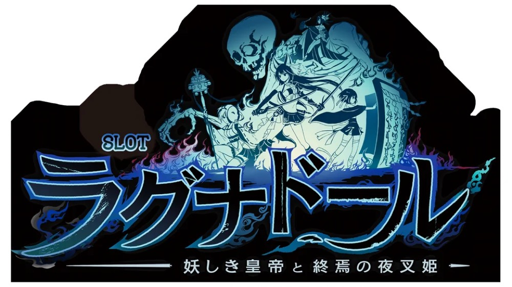

スマスロ ラグナドール
爽怪Chainをつなぎ、真ラグナドールRUSHへ。
- 導入
- 2026年11月
- メーカー
- ミズホ
- 分類
- パチスロ
主要スペック
2026年11月2日導入のスマスロ。設定別CZ・AT確率を使い、敵HPを削るラグナドールバトル、幻妖石を集めるチェインアタック、ガチャ、2種類のボーナス、スペシャルジャッジ、真ラグナドールRUSHまでを専用演出で体験できます。
- CZは約50%・敵ごとに10〜16G＋α
- 通常ATは40G＋α・純増約2.5枚/G
- 上位CZは16G・成功約70%、上位ATは純増約4.5枚/G
スマスロ ラグナドールの見どころと計算条件
2026年11月2日導入のスマスロ。設定別CZ・AT確率を使い、敵HPを削るラグナドールバトル、幻妖石を集めるチェインアタック、ガチャ、2種類のボーナス、スペシャルジャッジ、真ラグナドールRUSHまでを専用演出で体験できます。
スマスロ ラグナドールを数字で早分かり
ラグナドールバトルからラグナドールRUSH、真ラグナドールRUSHまでの流れと、設定ごとの結果差を固定レートで比較できます。
30秒で分かるスマスロ ラグナドール
40Gの通常ATでチェインとガチャを重ね、スペシャルジャッジから上位ATを狙う流れを段階的に楽しみたい人向けです。
こんな遊び方に向いている
- ガチャ型の報酬抽選が好き
- CZ・通常AT・上位CZを順番に体験したい
遊ぶ前に確認したいこと
- 通常ATは純増約2.5枚/G
- 上位の1500枚・2700枚は継続率ではなく期待枚数
設定別CZ・AT初当りを反映
CZは設定1約1/172.8から設定6約1/142.4、AT初当りは設定1約1/326.4から設定6約1/258.3です。
START時に設定1〜6を均等抽選し、選ばれた設定のCZ・AT初当り・出玉率を使用します。結果とランキングにも設定を表示します。
ラグナドールバトルはHPを削るCZ
CZはバトルパートとチェインパートの2部構成。敵は青龍・白虎・玄武・朱雀で、規定ゲーム数は10G＋αから16G＋α、トータル勝利期待度は約50%です。
小役でダメージとチェイン移行を抽選し、ラグナ目では0G連が発生。オトモ参戦時は固有の恩恵が付き、妖主参戦時は勝利期待度約90%です。シミュレーターは敵HP・小役別ダメージを約50%の代表PUSHへまとめます。
40GのATで幻妖石とガチャを集める
ラグナドールRUSHは初期40G＋α、純増約2.5枚/G。幻妖石を300個集めるかガチャ券を獲得すると、1G完結のガチャチャレンジへ進みます。
チェインアタックは5G保証で継続率80%・90%・95%。Wチェインは毎ゲーム2回報酬を獲得し、10チェインごとにチェインボーナスが発生します。サイトでは幻妖ミッション→チェイン→ガチャを別PUSHで表示します。
ガチャ・2種類のボーナス・上乗せ
ガチャチャレンジはゲーム数上乗せ、お祈りガチャ、10連ガチャを決める1Gゾーンで、ゲーム数上乗せは最大100Gです。
ストーリーボーナスは20G・純増約4.5枚/Gで終了時に10G上乗せ。クライマックスボーナスは30Gで、勝利時はエンディングストックと100G・300G・500Gのいずれかを獲得します。ボーナス回数に応じたクライマックス比率は調査中のため、サイトでは代表振り分けです。
スペシャルジャッジと3つのエピソード
規定枚数到達やエンディングストック発動後は16Gのスペシャルジャッジへ。成功期待度は約70%で、白7と黒BARは1:1です。
白7は天界＋10連ガチャ券で期待約2700枚、黒BARは冥界＋ガチャ券で期待約1500枚。失敗しても現世エピソード20G後に通常ATへ戻ります。上位は初期40G＋α・純増約4.5枚/Gで通常ATと同じガチャ型ゲーム性です。期待枚数は継続率ではなく、各エピソード突入後の平均値として1回の代表結果へ反映します。
導入後に確認できる天井
CZ間は500G＋αでCZ、AT間は999G＋αでATへ進みます。設定変更後はAT間天井が500G＋αへ短縮されます。
シミュレーターは平均的な初当りの幅を体験する用途のため、天井到達時の専用恩恵やCZ回数別の優遇は個別再現しません。
固定レートと収支の条件
- 約31.0G/50枚・1,000円46枚貸し・5.2枚交換で固定
- 設定1基準の平均AT投資目安は約11,400円
- コイン単価は設定1の参考値約3.6円として表示
- 19,000枚到達時はコンプリート表示
平均Gと投資目安の計算
掲載するラグナドールRUSH初当り約1/326.4は設定1基準です。当サイトでは50枚あたり31G、1,000円46枚貸しの固定条件から、設定1基準の平均投資目安を約11,400円と計算します。
シミュレーターでは設定1〜6を均等抽選します。設定1〜6で公開されている初当り値を個別に使います。公開されていない特化ゾーン・上位到達率の設定差は加えません。 換金は5.2枚交換で固定し、結果とランキングに設定を表示します。
シミュレーション結果の見方
当るまでラグナドールバトル・ラグナドールRUSHまでのゲーム数
設定設定1・2・3・4・5・6から抽選された今回の設定
上位到達スペシャルジャッジと真ラグナドールRUSHへの到達
最終収支差枚と5.2枚交換の収支目安
結果は自動で「マイ記録」に保存され、同じ機種を何回試したか、最高収支、勝率をあとから確認できます。
簡易シミュレーターについて
ラグナドールバトル・ラグナドールRUSH・真ラグナドールRUSHの流れを固定条件で体験できます。JavaScriptを有効にすると、この位置にシミュレーター、演出、マイ記録、機種別ランキングが表示されます。
結果は娯楽・確率理解のための参考表示です。金銭的価値や交換価値はなく、実際の勝敗や収支を保証しません。18歳未満の方の利用はお控えください。
スマスロ ラグナドールのよくある質問
スマスロ ラグナドールはどんな台？
2026年11月2日導入のスマスロ。 CZは約50%・敵ごとに10〜16G＋αが主な確認ポイントです。
スマスロ ラグナドールの平均投資目安は？
設定1基準のラグナドールRUSH初当り約1/326.4と、50枚あたり31G・46枚貸しの固定条件から、平均11,400円を目安として表示します。実際の設定や遊技状況で結果は変わります。
設定とゲームの流れはどう抽選する？
開始時に設定1・2・3・4・5・6から1つを均等抽選し、ラグナドールバトル、ラグナドールRUSH、スペシャルジャッジ、真ラグナドールRUSHの順で到達を判定します。設定は最終結果とランキングに表示します。
収支はどう計算する？
1,000円46枚貸し・5.2枚交換の固定条件で投資、換金、収支目安を計算します。実店舗の再プレイ、持ちメダル、端数処理は含みません。